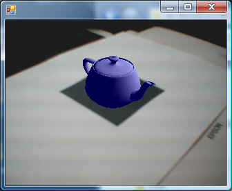

◎概要
ARToolKitというのは拡張現実感(Augmented Reality)と呼ばれる効果を生み出すためのライブラリで
テレビなどでたまに見かける「紙に印刷したマーカーの上にキャラクタが表示される」ような映像が
とても簡単に実現できるライブラリです。
より詳しい情報は下記をどうぞ。
http://www.hitl.washington.edu/artoolkit/
ARToolKitLibはこのARToolKitをVB(VB2008)から使うためのラッパーDLLになります。

※添付のサンプルの実行画面です。マーカーの位置にティーポットが表示されます。
注意事項になるのですが、
ARToolKitは内部的にOpenGLを使っており、かつ、GLUTライブラリが使われています。
当方で公開しているOpenGL用ライブラリのページでも説明していますが、
GLUTは.Net Frameworkと相性がよいとは言えません。
具体的にいいますと、プログラムの基本構造が
GLUTのメインループ機能(glutMainLoop)にのっかったメインループ機能(argMainLoop)を用いることが
前提となっているので、このARToolKitが用意しているメインループ機能を呼び出した時点で
すべての制御をARToolKit(GLUT)に委ねることになり一般的なVBでの終了方法がとれなくなります。
ぶっちゃけていうと、終了は「End」ステートメントを使うしかないのです。
一応argMainLoopを使わない方法のサンプルも添付していますが、
この場合、画像入力はOpenCV、マーカー認識はARToolKit、画面表示はOpenGLと
それぞれ別のライブラリを使う必要があります。
（それで問題はないと思いますが、あんまり多くのライブラリに依存するのは好きじゃないってだけです。
まぁARToolKitもそれと同じような考えでOpenGL(GLUT)に限ってるのかもしれませんけどね。）
◎インストール/使用準備
| ファイル名 | 備考 |
| ARToolKitLib_20081225.zip | 初公開バージョン |
上記アーカイブをダウンロードして頂き、適当なフォルダに展開して下さい。
使用時にはlibフォルダ下にある「ARToolKitLib.dll」を参照設定して下さい。
またこのライブラリを使用するにはARToolKit本体のインストールが必要です。
http://www.hitl.washington.edu/artoolkit/download/
上記あたりからWindows用をダウンロードしてこれまた適当なフォルダに展開して下さい。
ARToolKit本体のbinフォルダ、及び、DSVL\binフォルダにパスを張る必要があるかもしれません。
マイコンピュータのプロパティ
詳細設定タブ
環境変数ボタン
ユーザ環境変数の「Path」を選択し、編集ボタン
(ARToolKitのインストールフォルダ)\bin、及び、
(ARToolKitのインストールフォルダ)\DSVL\binを追加。
（「;」(セミコロン)で結合。変更後、再起動）
ARToolKit本体のbinフォルダにあるサンプルが動作する環境になっている必要があります。
◎ライセンス
このライブラリのソースにはARToolKitのソースの一部を流用しています。
よってARToolKitのライセンス(GPL)に準拠します。
詳細はARToolKitのサイトでご確認下さい。
◎ソースについて
アーカイブにはライブラリの全ソース(C++/CLI)が含まれています。
ラッパクラスの定義にはARToolKitのヘッダファイルから自動生成したコードを使用しています。
SourceMakeはこのソースファイルを生成するプログラムです。